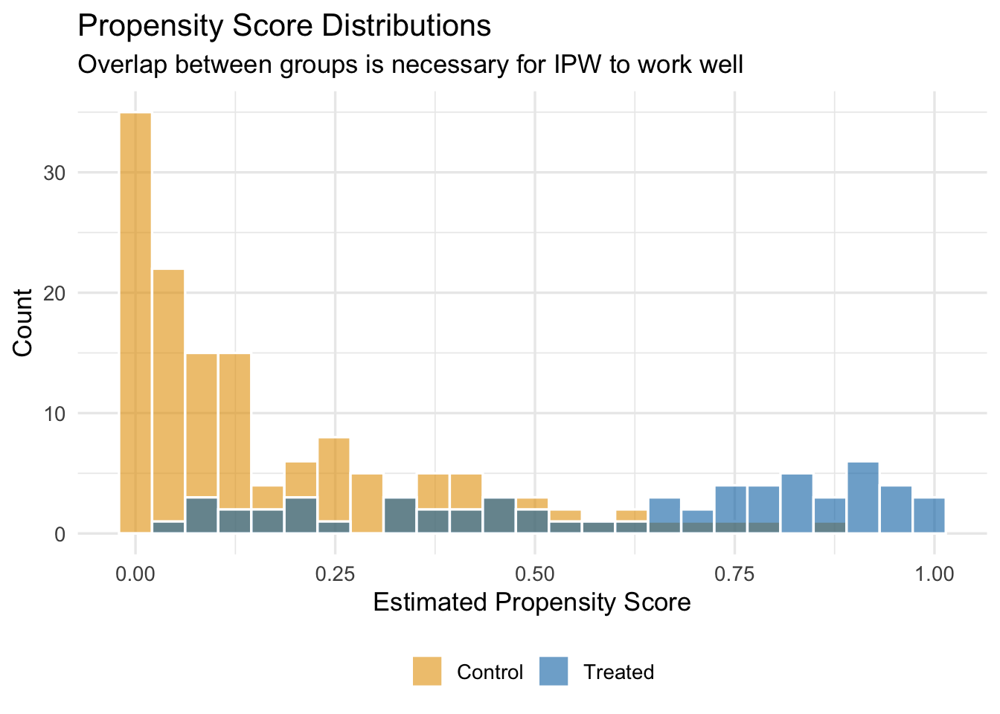
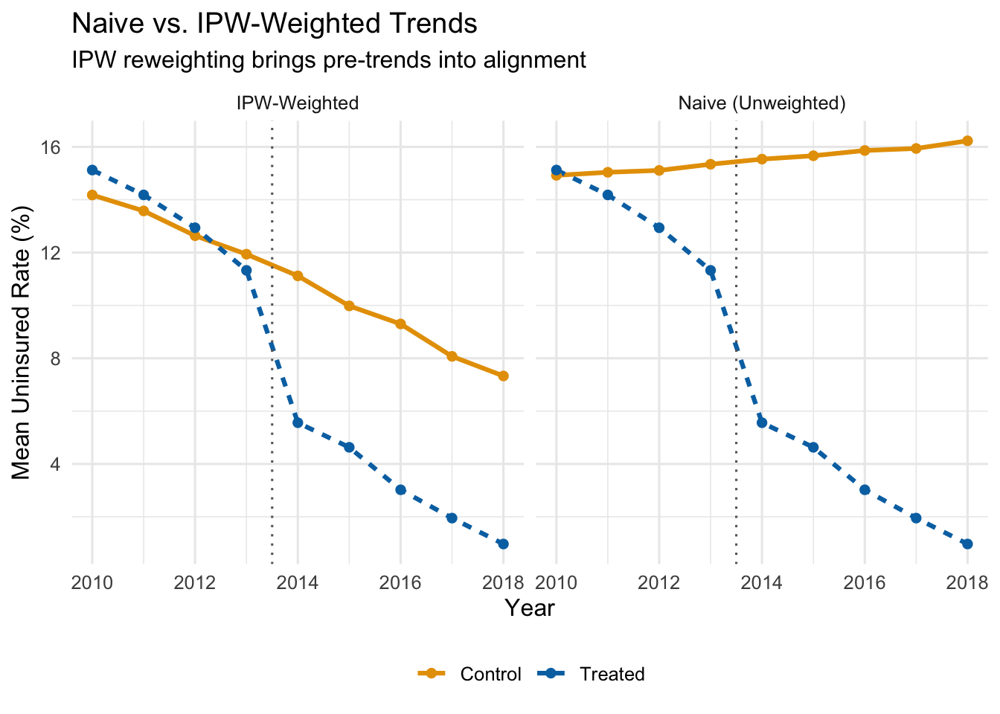

13 Advanced Difference-in-Differences
TipKey Questions
- How can we use data to select better control units for DiD?
- What are propensity scores and how do they improve DiD estimates?
- How do we estimate treatment effects that change over time?
- What is an event study and how do we interpret it?
- Why do we need cluster-robust standard errors in panel data?
NoteSuggested Readings
- Cunningham, Causal Inference: The Mixtape, Chapter 9 (Difference-in-Differences)
- Angrist and Pischke, Mostly Harmless Econometrics, Chapter 5
- Abadie, Alberto (2005). “Semiparametric Difference-in-Differences Estimators.” Review of Economic Studies 72(1): 1-19.
- Callaway, Brantly and Pedro H.C. Sant’Anna (2021). “Difference-in-Differences with Multiple Time Periods.” Journal of Econometrics 225(2): 200-230.
The basic difference-in-differences framework from Chapter 12 gets us a long way, but real-world applications often demand more sophisticated tools. In that chapter, we assumed that our treated and control groups were already on parallel paths before the policy—an assumption that rarely holds without effort on the part of the researcher. We also estimated a single, constant treatment effect across all post-treatment periods, when in practice, the impact of a policy often grows, shrinks, or shifts as time passes.
This chapter tackles three important extensions to the basic DiD framework. First, we discuss how researchers choose good control groups, both through institutional knowledge and through data-driven methods like propensity score weighting. Second, we introduce dynamic DiD and event studies, which let treatment effects vary over time and provide a visual test for pre-trends. Finally, we cover cluster-robust standard errors, which fix a common inferential problem in panel data that can badly inflate Type I error rates.
13.1 Choosing Good Controls
13.1.1 Why Control Selection Matters
As we discussed in the previous chapter, a DiD estimate is only as credible as the counterfactual it relies on. The whole enterprise rests on the parallel trends assumption: in the absence of treatment, the treated units would have followed the same trajectory as the control units. If the control group is on a fundamentally different path, your DiD estimate picks up those diverging trends and attributes them—incorrectly—to the policy.
The chain of logic is simple:
- Good controls \(\rightarrow\) Good counterfactual \(\rightarrow\) Credible DiD estimate
- Bad controls \(\rightarrow\) Bad counterfactual \(\rightarrow\) Biased DiD estimate
So how do researchers go about choosing good controls? There are broadly two approaches: selecting controls based on institutional knowledge, and selecting controls using statistical methods.
13.1.2 Method 1: Intuitive Selection Based on Institutional Knowledge
The most traditional approach is to choose controls based on what you know about the institutional setting. The researcher identifies comparison units that, for reasons grounded in the context of the problem, should have been on similar trajectories to the treated units.
A classic example is the border discontinuity design. Imagine two counties that sit right next to each other, straddling a state border. The people who live in these counties shop at the same stores, watch the same local news, face the same weather patterns, and work in the same labor markets. They are, for most purposes, very similar—except that they are governed by different state legislatures. When one state changes a policy and the other does not, the untreated county just across the border is a natural control.
Card and Krueger (1994) used exactly this logic to study New Jersey’s 1992 minimum wage increase. They compared fast-food employment in New Jersey counties to employment in adjacent Pennsylvania counties. The idea is that restaurants on either side of the border faced the same local economic conditions, so any divergence in employment after the minimum wage hike could be attributed to the policy itself.
Dube, Lester, and Reich (2010) extended this idea to all contiguous county pairs along state borders where the two states had different minimum wages. Rather than relying on a single natural experiment, they exploited hundreds of such pairs simultaneously, greatly increasing statistical power while maintaining the logic that neighboring counties are good controls for one another.
This approach works well when the institutional setting provides a clear reason why certain untreated units should track treated units. But it requires detailed knowledge of the specific context, and it is not always possible to find such “natural” comparison groups.
13.1.3 Method 2: Data-Driven Control Selection
An alternative is to let the data guide the choice of controls. The idea is to use an algorithm to find untreated units that are similar to treated units based on observable characteristics. The hope is that if units share observable traits, they are also similar on the unobservable factors that drive trends in the outcome.
There are many data-driven methods for selecting controls: synthetic controls (which construct a weighted combination of untreated units to match the treated unit’s pre-treatment trajectory), nearest-neighbor matching (which pairs each treated unit with the most similar untreated unit), and propensity score methods (which reweight the control group based on predicted probability of treatment). All share the same goal—building a better counterfactual using data—but they differ in how they define “similar.”
We will focus on one method that combines naturally with the TWFE framework: Inverse Propensity Score Weighted DiD (IPW-DiD).
13.2 IPW-DiD: Propensity Score Weighting
13.2.1 Setting Up the Problem
Consider estimating the effect of the Affordable Care Act (ACA) Medicaid expansion on health insurance coverage rates. In 2014, a number of states expanded Medicaid eligibility under the ACA, while others did not. A natural DiD approach would compare uninsured rates in expansion states (treated) to non-expansion states (control), before and after 2014.
The TWFE DiD model would be:
\[ y_{it} = \beta_0 + \beta_1 D_{it} + \alpha_i + \tau_t + \mu_{it} \]
where \(y_{it}\) is the uninsured rate in state \(i\) in year \(t\), \(D_{it}\) is a treatment indicator equal to 1 in expansion states after 2014, \(\alpha_i\) are state fixed effects, \(\tau_t\) are year fixed effects, and \(\mu_{it}\) is the error term.
The problem is that states which expanded Medicaid are very different from states that did not. Expansion states tend to be more politically liberal, have different demographic profiles, different industry compositions, and different baseline health care systems. These are not random differences—they are systematically related to the decision to expand. And if these same characteristics also affect trends in uninsured rates, then parallel trends will fail.
The figure below plots average uninsured rates over time for expansion states and all non-expansion states, using our simulated data.
Even before the ACA expansion in 2014, expansion states had steeper downward trends in uninsured rates. That pre-existing divergence would be incorrectly attributed to the policy if we ran a naive DiD. The treated states were already “improving” faster—perhaps because they had more liberal politics, invested more in public health, or had demographics that were trending toward higher coverage for other reasons.
Using all non-expanding states as controls gives us a bad counterfactual.
13.2.2 The Intuition Behind Propensity Score Weighting
So what can we do? One approach is to find untreated states that are similar to treated states—states that, based on their observable characteristics, looked like they should have expanded Medicaid but didn’t. The logic is straightforward: if a state had a high Democratic vote share, high poverty rates, and other features that strongly predicted expansion, yet it didn’t expand, then that state is probably a better counterfactual for expansion states than, say, a deep-red state that was never going to expand.
Propensity score methods formalize this intuition. The procedure works in three steps:
- Estimate each state’s probability of being treated, based on observable characteristics.
- Give more weight to control states that “look like” they should have been treated.
- Use these weights in the TWFE DiD regression.
Control units with high propensity scores—high predicted probability of treatment—that were not actually treated become the primary comparison group. They are observably similar to treated units, which makes the parallel trends assumption more plausible among this reweighted comparison.
13.2.3 Step 1: Estimate Propensity Scores
The propensity score is the predicted probability that a unit receives treatment, conditional on a set of observable characteristics. We estimate it with a logistic regression:
\[ P(D_i = 1 \mid X) = G(\beta_0 + \beta_1 X_1 + \beta_2 X_2 + \ldots + \beta_k X_k) \]
where \(D_i\) is the treatment indicator (1 if the state expanded, 0 otherwise), \(G(\cdot)\) is the logistic function, and the \(X\) variables are pre-treatment characteristics that predict treatment.
For the ACA expansion example, we might include:
- \(X_1\): Democratic vote share (political leaning)
- \(X_2\): Region of the country
- \(X_3\): Baseline poverty rates
We estimate this using only pre-treatment data (i.e., data from before 2014), because we want characteristics that predict treatment assignment, not characteristics that were themselves affected by the treatment.
# Aggregate to state level using only pre-treatment data
state_data <- panel_data |>
filter(post == 0) |>
group_by(state_id, is_expanded) |>
summarize(
dem_share = mean(X1),
region = mean(X2),
poverty = mean(X3),
.groups = 'drop'
)
# Estimate propensity scores with logistic regression
ps_model <- glm(is_expanded ~ dem_share + region + poverty,
data = state_data,
family = binomial("logit"))
# Get predicted probabilities (the propensity scores)
state_data <- state_data |>
mutate(ps_score = predict(ps_model, type = "response"))13.2.4 Step 2: Calculate Inverse Propensity Weights
Once we have propensity scores, we compute the inverse propensity weights (IPW). The formula is:
\[ IPW_i = D_i + (1 - D_i) \times \frac{\hat{P}_i}{1 - \hat{P}_i} \]
What does this formula do?
- If a unit is treated (\(D_i = 1\)): the weight is simply \(IPW_i = 1\). All treated units get equal weight.
- If a unit is untreated (\(D_i = 0\)): the weight is \(IPW_i = \frac{\hat{P}_i}{1 - \hat{P}_i}\).
That second case is where the action is. The ratio \(\frac{\hat{P}_i}{1 - \hat{P}_i}\) is the odds that the unit would have been treated. When the predicted probability is high (say, \(\hat{P}_i = 0.87\)), the weight is large (\(\frac{0.87}{0.13} = 6.69\)). When the predicted probability is low (say, \(\hat{P}_i = 0.16\)), the weight is small (\(\frac{0.16}{0.84} = 0.19\)).
The bottom line: control units that look like they should have been treated get a lot of weight; control units that look nothing like treated units get very little weight.
A concrete example with specific states makes this clearer:
| State | Treatment Status | \(\hat{P}_i\) | \(IPW_i\) |
|---|---|---|---|
| MI | \(D_i = 1\) (Treated) | 0.91 | 1.00 |
| WI | \(D_i = 0\) (Control) | 0.87 | 6.69 |
| TX | \(D_i = 0\) (Control) | 0.16 | 0.19 |
| PA | \(D_i = 0\) (Control) | 0.79 | 3.76 |
| MA | \(D_i = 1\) (Treated) | 0.98 | 1.00 |
| LA | \(D_i = 0\) (Control) | 0.28 | 0.38 |
Wisconsin and Pennsylvania—control states with high propensity scores—get weights of 6.69 and 3.76 respectively. They will dominate the weighted control group. Texas and Louisiana—control states with low propensity scores—get weights of 0.19 and 0.38. They barely contribute to the comparison. The effect is to build a weighted control group that is observably similar to the treated group.
# Calculate IPW weights
state_data <- state_data |>
mutate(
ipw = case_when(
is_expanded == 1 ~ 1,
is_expanded == 0 ~ ps_score / (1 - ps_score)
)
)
# Show a sample of weights
state_data |>
select(state_id, is_expanded, ps_score, ipw) |>
arrange(desc(ipw)) |>
head(10) |>
knitr::kable(digits = 2)| state_id | is_expanded | ps_score | ipw |
|---|---|---|---|
| 32 | 0 | 0.86 | 5.94 |
| 181 | 0 | 0.79 | 3.77 |
| 51 | 0 | 0.75 | 3.06 |
| 101 | 0 | 0.69 | 2.26 |
| 31 | 0 | 0.65 | 1.85 |
| 150 | 0 | 0.63 | 1.71 |
| 29 | 0 | 0.61 | 1.58 |
| 106 | 0 | 0.59 | 1.41 |
| 87 | 0 | 0.54 | 1.15 |
| 152 | 0 | 0.53 | 1.13 |
13.2.5 Visualizing the Weighting
We should also check how the propensity score distribution differs between treated and control units. We want good overlap—treated and control units should have propensity scores in the same range. If the distributions barely overlap, then there are few untreated units that resemble treated units, and IPW will rely heavily on a handful of extreme weights.

13.2.6 Step 3: Run the Weighted TWFE Regression
Finally, we estimate the standard TWFE DiD regression, but using the IPW weights. In fixest, this is done by passing the weights to the weights argument of feols():
# Merge weights into panel data
panel_weighted <- panel_data |>
left_join(select(state_data, state_id, ipw), by = "state_id")
# Naive (unweighted) DiD
did_naive <- feols(uninsured_rate ~ treat_active | state_id + year,
vcov = "HC1",
data = panel_data)
# IPW-weighted DiD
did_ipw <- feols(uninsured_rate ~ treat_active | state_id + year,
vcov = "HC1",
weights = ~ipw,
data = panel_weighted)13.2.7 Comparing Results
Let’s see what IPW weighting does to the parallel trends picture. The figure below shows the IPW-weighted average uninsured rates for treated and control states.

After reweighting, the control group tracks the treated group much more closely in the pre-treatment period. If the groups are on parallel paths before the policy, we can be more confident that the post-treatment divergence reflects the causal effect of the policy rather than pre-existing differences.
Now let’s compare the actual coefficient estimates side-by-side. Recall that the true ATT in our simulated data is \(-5\) percentage points.

| Method | Estimate | 95% CI Lower | 95% CI Upper | True Effect |
|---|---|---|---|---|
| Naive DiD (all controls, equal weight) | -10.91 | -11.50 | -10.32 | -5 |
| IPW-Weighted DiD | -6.24 | -6.99 | -5.50 | -5 |
The naive DiD estimate is substantially biased—it is too negative because it confounds the policy effect with the pre-existing trend differences. The IPW estimate is much closer to the true effect of \(-5\) percentage points.
ImportantThe IPW Estimate Is Only as Good as the Propensity Score Model
IPW-DiD works by reweighting the control group to look more like the treatment group on observables. If you omit an important confounder from the propensity score model—something that predicts both treatment and the outcome trend—the bias remains. There is no free lunch here: the method corrects for the observable differences you model, not the ones you miss.
13.2.8 Summary of the IPW-DiD Algorithm
The full IPW-DiD procedure is:
- Estimate propensity scores. Run a logistic regression of treatment status on pre-treatment covariates. The predicted probabilities are the propensity scores.
- Compute IPW weights. Treated units get weight 1. Untreated units get weight \(\hat{P}_i / (1 - \hat{P}_i)\).
- Check overlap. Make sure the propensity score distributions for treated and control units overlap. If there are regions with no overlap, those units cannot be compared.
- Run the weighted TWFE regression. Use the IPW weights in your standard
feols()call.
13.3 Dynamic DiD and Event Studies
13.3.1 Why Treatment Effects May Change Over Time
The basic TWFE DiD model estimates a single treatment effect \(\hat{\beta}\) that applies to every post-treatment period equally. This is a strong restriction. In practice, many policies have effects that evolve over time:
- A job training program might have small effects initially that grow as participants gain experience and find better jobs.
- A minimum wage increase might cause immediate disemployment effects that fade as firms adjust their production processes.
- An environmental regulation might have mounting effects as firms gradually come into compliance.
- A public health intervention might show a burst of impact that then diminishes as the population adjusts.
If the treatment effect is changing over time, a single coefficient averages over these different effects and may miss important dynamics. Worse, it might obscure the fact that the effect is growing, or that it peaked early and then faded.
Dynamic DiD (sometimes called an event study) solves this by estimating separate treatment effects for each period relative to the treatment date.
13.3.2 Relative Time
Dynamic DiD models are built around relative time—the number of periods that have elapsed since the event occurred—rather than calendar time. If the policy was enacted in 2015, then:
| Calendar Year | Relative Time (\(k\)) |
|---|---|
| 2012 | \(-3\) |
| 2013 | \(-2\) |
| 2014 | \(-1\) |
| 2015 (treatment) | 0 |
| 2016 | \(+1\) |
| 2017 | \(+2\) |
| 2018 | \(+3\) |
Relative time \(k = 0\) is the period in which treatment occurs. Negative values of \(k\) represent the pre-treatment period; positive values represent the post-treatment period.
Why frame things this way? Because it lets us estimate the treatment effect at each distance from the event. And it lets us test whether there were “effects” before the policy even started—which there shouldn’t be, if parallel trends holds.
13.3.3 The Dynamic DiD Model
The dynamic DiD model replaces the single \(D_{it}\) indicator with a set of dummy variables, one for each value of relative time:
\[ y_{it} = \sum_{k \neq -1} \beta_k D_{it}^k + \alpha_i + \tau_t + \mu_{it} \tag{13.1}\]
where:
- \(D_{it}^k\) is a dummy variable that equals 1 if unit \(i\) is in the treatment group and period \(t\) corresponds to relative time \(k\) for that unit, and 0 otherwise.
- \(\alpha_i\) and \(\tau_t\) are unit and time fixed effects, as before.
- We omit the dummy for \(k = -1\) (the period just before treatment) as the reference category.
Because \(k = -1\) is omitted, all of the \(\hat{\beta}_k\) coefficients are interpreted as the treatment effect at time \(k\) relative to the period just before treatment.
- The pre-treatment coefficients (\(\hat{\beta}_{-2}, \hat{\beta}_{-3}, \ldots\)) should all be close to zero if parallel trends holds. Why? Think about what these coefficients measure. The coefficient \(\hat{\beta}_{-3}\), for example, estimates the difference between treated and control groups at \(k = -3\) relative to their difference at \(k = -1\). If both groups were on the same trajectory before the policy, then the gap between them should not have been changing in the pre-treatment period, and all of these coefficients should be near zero. If instead \(\hat{\beta}_{-3}\) is large and statistically significant, it means the groups were already drifting apart three years before the policy started—an obvious warning sign that the control group was not on the same path as the treated group. In that case, we cannot credibly attribute any post-treatment divergence to the policy, because the groups were diverging anyway.
- The post-treatment coefficients (\(\hat{\beta}_0, \hat{\beta}_1, \hat{\beta}_2, \ldots\)) trace out the causal effect of the policy over time, again relative to the baseline period.
13.3.4 Constructing the Data for Dynamic DiD
To estimate Equation 13.1, we need to create a set of dummy variables—one for each relative time period, interacted with treatment status. Let’s walk through the data construction with a small example.
Suppose we have 4 units (2 treated, 2 control), observed from 2014 to 2018, with treatment occurring in 2016. The standard DiD dataset has a single treat_post column. For dynamic DiD, we replace it with a series of rel_t_treat dummies:
| unit_id | year | treatment_group | treat_post | rel_t_treat_-1 | rel_t_treat_-2 | rel_t_treat_0 | rel_t_treat_1 | rel_t_treat_2 |
|---|---|---|---|---|---|---|---|---|
| 1 | 2014 | 1 | 0 | 0 | 1 | 0 | 0 | 0 |
| 1 | 2015 | 1 | 0 | 1 | 0 | 0 | 0 | 0 |
| 1 | 2016 | 1 | 1 | 0 | 0 | 1 | 0 | 0 |
| 1 | 2017 | 1 | 1 | 0 | 0 | 0 | 1 | 0 |
| 1 | 2018 | 1 | 1 | 0 | 0 | 0 | 0 | 1 |
| 2 | 2014 | 1 | 0 | 0 | 1 | 0 | 0 | 0 |
| 2 | 2015 | 1 | 0 | 1 | 0 | 0 | 0 | 0 |
| 2 | 2016 | 1 | 1 | 0 | 0 | 1 | 0 | 0 |
| 2 | 2017 | 1 | 1 | 0 | 0 | 0 | 1 | 0 |
| 2 | 2018 | 1 | 1 | 0 | 0 | 0 | 0 | 1 |
| 3 | 2014 | 0 | 0 | 0 | 0 | 0 | 0 | 0 |
| 3 | 2015 | 0 | 0 | 0 | 0 | 0 | 0 | 0 |
| 3 | 2016 | 0 | 0 | 0 | 0 | 0 | 0 | 0 |
| 3 | 2017 | 0 | 0 | 0 | 0 | 0 | 0 | 0 |
| 3 | 2018 | 0 | 0 | 0 | 0 | 0 | 0 | 0 |
| 4 | 2014 | 0 | 0 | 0 | 0 | 0 | 0 | 0 |
| 4 | 2015 | 0 | 0 | 0 | 0 | 0 | 0 | 0 |
| 4 | 2016 | 0 | 0 | 0 | 0 | 0 | 0 | 0 |
| 4 | 2017 | 0 | 0 | 0 | 0 | 0 | 0 | 0 |
| 4 | 2018 | 0 | 0 | 0 | 0 | 0 | 0 | 0 |
Notice the pattern: for treated units, exactly one of the rel_t_treat columns equals 1 in each period (corresponding to that period’s relative time). For control units, all the rel_t_treat columns are 0. When we regress the outcome on these dummies (omitting rel_t_treat_-1), each coefficient gives us the treatment effect at that specific distance from the policy.
13.3.5 Example: Environmental Policy and Manufacturing Employment
Suppose we want to estimate how an environmental regulation affects manufacturing employment in cities. We have data on 50 cities observed from 1995 to 2010. In 2005, 25 cities adopted the policy while 25 did not. The true effect in our simulation starts at \(-100\) jobs in the adoption year, grows to \(-300\) after one year, \(-450\) after two years, and levels off at \(-500\) from year three onward.
Let’s start by visualizing the raw trends:

The trends are parallel before 2005—good news for our identifying assumption. After the policy, treated cities experience a growing decline in manufacturing employment relative to control cities.
A standard (static) DiD would estimate a single average effect across all post-treatment years. But the figure suggests the effect is growing over time. Dynamic DiD lets us capture this.
13.3.6 Estimating the Dynamic Model
We estimate the model by including all the relative-time dummies (except \(k = -1\)) along with city and year fixed effects:
# Estimate dynamic DiD (rel_t_treat_-1 omitted as reference)
dyn_did <- feols(
manufacturing_emp ~ `rel_t_treat_-10` + `rel_t_treat_-9` + `rel_t_treat_-8` +
`rel_t_treat_-7` + `rel_t_treat_-6` + `rel_t_treat_-5` + `rel_t_treat_-4` +
`rel_t_treat_-3` + `rel_t_treat_-2` + `rel_t_treat_0` + `rel_t_treat_1` +
`rel_t_treat_2` + `rel_t_treat_3` + `rel_t_treat_4` + `rel_t_treat_5` |
city_id + year,
vcov = "HC1",
data = env_data
)Each coefficient tells us the estimated treatment effect at that relative time, compared to the omitted period \(k = -1\).
13.3.7 The Event Study Plot
The standard way to present dynamic DiD results is an event study plot. We plot each estimated \(\hat{\beta}_k\) coefficient along with its 95% confidence interval on the y-axis, and relative time on the x-axis. A horizontal line at zero and a vertical dashed line at the treatment date provide reference points.

13.3.8 Interpreting the Event Study
Look at the event study plot. There are three regions worth discussing:
Pre-treatment coefficients (\(k < -1\)). These are all close to zero, and their 95% confidence intervals include zero. This is the key test for parallel trends. Each pre-treatment coefficient estimates how the treated-control gap at time \(k\) differs from the gap at \(k = -1\). If the two groups were trending in the same direction before the policy, these differences should all be small and statistically indistinguishable from zero.
Why does this work as a test? Consider what it would mean if \(\hat{\beta}_{-5}\) were large and negative. That would say: “Five years before this policy was enacted, the treated cities already had lower employment relative to control cities than they did one year before the policy.” That is a trend difference that existed well before anyone passed a regulation. If such pre-treatment gaps exist, we have no way to know whether the post-treatment gaps are caused by the policy or are just a continuation of whatever was already happening. The pre-treatment coefficients are, in effect, a placebo test: we are estimating the “effect” of a policy in years when the policy did not yet exist. If we find statistically significant effects in those placebo years, something is wrong with our control group.
In our example, the pre-treatment coefficients are all small and bounce around zero with no discernible pattern. This is reassuring—it suggests that before the regulation, treated and control cities were on parallel paths.
The reference period (\(k = -1\)). This is zero by construction, since it is the omitted category. All other coefficients are measured relative to this period.
Post-treatment coefficients (\(k \geq 0\)). These trace out the causal effect of the policy over time. The effect starts at about \(-100\) in the adoption year (\(k = 0\)), grows to roughly \(-300\) at \(k = 1\), reaches about \(-450\) at \(k = 2\), and levels off near \(-500\) from \(k = 3\) onward. This matches the true effects we built into the simulation: the regulation reduced manufacturing employment, and the effect grew over several years before stabilizing.
NotePre-Trends as a Diagnostic
The pre-treatment coefficients are the most important part of an event study for judging whether a DiD design is credible. If you see large, statistically significant estimates before the policy was implemented, it means the treated and control groups were already diverging for reasons unrelated to the treatment. Any post-treatment divergence could just be a continuation of those pre-existing trends, and the DiD estimate cannot be trusted.
Note that failing to find significant pre-trends does not prove parallel trends holds—we might just lack the statistical power to detect a violation, or the violation could start right at the treatment date. But finding flat pre-treatment coefficients is a necessary (if not sufficient) condition for a credible DiD design.
13.3.9 A Note on Staggered Adoption
Our environmental policy example is a “simple” case: all 25 treated cities adopted the policy in the same year (2005). This is called simultaneous adoption. But many real-world policies are adopted at different times by different units—some states raise their minimum wage in 2015, others in 2017, and still others in 2020. This is called staggered adoption.
The standard TWFE dynamic DiD model can produce seriously biased estimates under staggered adoption. The problem, documented in a series of influential papers by Goodman-Bacon (2021), Callaway and Sant’Anna (2021), Sun and Abraham (2021), and others, arises because the TWFE estimator implicitly uses already-treated units as controls for later-treated units, which can create “negative weights” on some treatment effects.
WarningStaggered Adoption Warning
If units in your study are treated at different times, the simple TWFE estimator described here can be severely biased. You should use one of the newer estimators designed for staggered adoption (e.g., the Callaway-Sant’Anna estimator, implemented in the did R package, or the Sun-Abraham estimator). The details of these methods are beyond the scope of this chapter, but you should be aware that this is an active and important area of research.
13.4 Cluster-Robust Standard Errors
13.4.1 The Problem: Non-Independent Observations
Everything we have discussed so far concerns getting the point estimate right—ensuring that \(\hat{\beta}\) is close to the true \(\beta\). But a point estimate without a measure of uncertainty is not very useful. We also need our standard errors, p-values, and confidence intervals to be correct.
Standard OLS assumes that observations are independent. But in panel data, this assumption is almost always violated. Observations from the same unit across time are correlated: if a state has a high uninsured rate in 2012, it probably has a high uninsured rate in 2013 too. Students in the same classroom share a teacher, a curriculum, and a socioeconomic neighborhood. Workers at the same firm share management quality and corporate culture.
When errors are correlated within groups (or “clusters”), standard OLS standard errors are wrong. They are typically too small, which means:
- T-statistics are too large.
- P-values are too small.
- Confidence intervals are too narrow.
- You commit Type I errors (false positives) far more often than you think.
Recall that a Type I error is when you reject the null hypothesis even though it is actually true—you conclude that a policy had an effect when it really did not. We usually set our significance level at \(\alpha = 0.05\), meaning we accept a 5% false positive rate. But when you ignore clustering, your actual false positive rate can be 20%, 30%, or even higher, all while R happily reports a p-value below 0.05.
13.4.2 An Intuitive Example
Here is a simple way to think about the problem. Imagine you want to estimate the average height of 5th graders in a city. You have two sampling plans:
Plan A (Simple Random Sample): Randomly select 1,000 students from across the entire city.
Plan B (Cluster Sample): Randomly select 40 classrooms, and measure all 25 students in each classroom.
Both plans give you \(N = 1{,}000\) observations. But they are not equally informative. In Plan B, students within the same classroom tend to be similar—they share a teacher, a neighborhood, and often a socioeconomic background. Measuring 25 students from the same classroom gives you much less new information than measuring 25 students drawn independently from across the city. The 25 students are not 25 independent data points; they are more like one and a half data points (exaggerating slightly to make the point).
If you compute a standard error pretending that all 1,000 observations are independent, you will badly understate the true sampling uncertainty. Your confidence interval will be far too narrow.
13.4.3 What Is a “Cluster”?
A cluster is a group of observations where errors are likely correlated within the group but independent across groups. Some common examples:
| Individual Unit | Natural Cluster |
|---|---|
| Students | Classroom |
| Patients | Hospital |
| Workers | Firm |
| Counties | State |
| Person-year observations | Person |
In DiD settings, the most natural cluster is usually the unit at which treatment is assigned. If the policy is set at the state level, then all observations within a state (across time) form a cluster.
13.4.4 Visualizing Clustered Data
The figure below illustrates what clustered data looks like. Each color represents a different cluster. Notice how observations within a cluster are bunched together—they are more similar to each other than to observations in other clusters. Standard OLS treats every dot as an independent piece of information, when in reality, dots of the same color are telling you largely the same thing.

13.4.5 The Statistical Violation
Formally, this is a violation of the Gauss-Markov assumptions of random sampling and homoskedasticity. In a standard OLS model, we assume that the error terms \(\mu_i\) and \(\mu_j\) are uncorrelated for any two observations \(i \neq j\). With clustered data, this fails: if observation \(i\) has a high error, then other observations in the same cluster probably do too.
On the bright side, clustering does not bias the coefficient estimate \(\hat{\beta}\). Your point estimate is still unbiased. The problem is that it invalidates the standard error calculation, which means your inference—your t-tests, p-values, and confidence intervals—is wrong.
The degree of the problem depends on the intra-cluster correlation (ICC): the fraction of total variance in the outcome that is attributable to between-cluster differences. When the ICC is high, within-cluster observations are very similar, and the effective sample size is much smaller than the nominal sample size. When the ICC is zero (no clustering), standard OLS inference is valid.
13.4.6 Simulation: Type I Error Rates With and Without Clustering
To see how bad the Type I error problem gets, let’s run a simulation. We will generate data where the true treatment effect is exactly zero, then run 500 regressions and count how often we incorrectly reject the null hypothesis—that is, how often we commit a Type I error. If our standard errors are correct, the Type I error rate should be about 5% (since we are testing at \(\alpha = 0.05\)). If the standard errors are too small because we ignored clustering, the Type I error rate will be much higher.

The results speak for themselves:
- With naive standard errors: The Type I error rate is 61%. Remember, the true effect is zero, so every single rejection is a false positive. We are supposed to be rejecting only 5% of the time, but instead we are committing Type I errors at a rate many times higher than that.
- With cluster-robust standard errors: The Type I error rate is about 6%, which is close to the nominal 5% we intended.
This is not a minor technical footnote. If you ignore clustering in your panel data, you will “discover” treatment effects that do not exist. You will write up results that look statistically significant but are just noise. Published papers have been called into question for exactly this reason.
13.4.7 How Cluster-Robust Standard Errors Work
The formula for cluster-robust standard errors is too involved for this class, but the intuition is not:
- Compute the regression residuals (\(\hat{y}_i - y_i\)) as usual.
- Instead of treating each residual as independent, sum the residuals within each cluster.
- Compute the variance of these cluster-level sums.
- Use this to construct a standard error that reflects the true amount of independent variation in the data.
What this means in practice is that your effective sample size is closer to the number of clusters (\(G\)), not the total number of observations (\(N\)). In our simulation, we had \(N = 1{,}500\) observations but only \(G = 50\) clusters. Naive standard errors acted as if we had 1,500 independent data points. Cluster-robust standard errors recognized that we really only had about 50 independent pieces of information.
13.4.8 Implementing Cluster-Robust Standard Errors in R
With the fixest package, cluster-robust standard errors are easy. Instead of using vcov = "HC1", use the cluster argument and specify the clustering variable:
# Naive (incorrect) standard errors
model_naive <- feols(y ~ treatment | state + year,
vcov = "HC1",
data = my_data)
# Cluster-robust standard errors (correct for state-level clustering)
model_cluster <- feols(y ~ treatment | state + year,
cluster = "state",
data = my_data)For the ACA expansion example, since the policy is set at the state level, we cluster at the state level:
# Cluster-robust standard errors for the ACA DiD
did_crse <- feols(uninsured_rate ~ treat_active | state_id + year,
cluster = "state_id",
data = panel_data)
summary(did_crse)OLS estimation, Dep. Var.: uninsured_rate
Observations: 1,800
Fixed-effects: state_id: 200, year: 9
Standard-errors: Clustered (state_id)
Estimate Std. Error t value Pr(>|t|)
treat_active -10.9088 0.564271 -19.3325 < 2.2e-16 ***
---
Signif. codes: 0 '***' 0.001 '**' 0.01 '*' 0.05 '.' 0.1 ' ' 1
RMSE: 2.69942 Adj. R2: 0.814526
Within R2: 0.460845Notice that the coefficient is unchanged (clustering does not affect the point estimate), but the standard error is larger than it would be with naive standard errors, leading to a wider confidence interval and a larger p-value.
13.4.9 Choosing the Right Cluster Level
A common question is: what should I cluster on? The answer is not always obvious, and reasonable people sometimes disagree. The general rule is:
TipRule of Thumb: Cluster at the Level of Treatment Assignment
Cluster your standard errors at the level where treatment varies. If policies are set at the state level, cluster by state. If a program is implemented at the school level, cluster by school. If an intervention targets individual patients within hospitals, you might cluster at the hospital level.
Some additional considerations:
- You generally need a reasonable number of clusters (at least 30-50) for the cluster-robust standard errors to work well. With very few clusters, they can be unreliable.
- When in doubt, cluster at a broader level rather than a narrower one. Clustering at the state level when you could cluster at the county level is conservative—it gives you larger standard errors, which is the safer error.
- In some settings, there may be good reasons to cluster at a different level than treatment assignment (e.g., if you believe there is spatial correlation across states). But treatment-level clustering is the default starting point.
13.5 Summary
This chapter covered three extensions to the basic DiD framework that come up constantly in applied work.
Choosing good controls is the foundation of any DiD analysis. Researchers can draw on institutional knowledge (border discontinuity designs, natural comparison groups) or use data-driven methods like propensity score weighting to build a better counterfactual. The key is that your control group must be on a similar trajectory to your treated group before the policy—otherwise, your estimate will be biased.
IPW-DiD formalizes the data-driven approach by reweighting control units based on their predicted probability of treatment. Control units that resemble treated units on observables get high weights; dissimilar controls get low weights. The method is easy to implement (logistic regression \(\rightarrow\) compute weights \(\rightarrow\) weighted TWFE) but only corrects for the confounders you include in the propensity score model.
Dynamic DiD and event studies let treatment effects vary over time and provide a built-in diagnostic for the parallel trends assumption. Pre-treatment coefficients near zero support the design; significant pre-treatment “effects” are a red flag. Event study plots are the standard way to present these results.
Cluster-robust standard errors correct for correlated errors within groups. Without them, standard OLS inference in panel data produces standard errors that are too small, inflating the Type I error rate far beyond the intended 5%. The fix is simple in fixest: use the cluster argument and cluster at the level of treatment assignment.
13.6 Check Your Understanding
For each question below, select the best answer from the dropdown menu.
TipShow Explanation
Control units with high propensity scores (high predicted probability of being treated) but who weren’t actually treated receive higher weights. The IPW formula gives them weight \(= \hat{P}/(1-\hat{P})\), which increases as \(\hat{P}\) gets larger. The intuition is that these units are most similar to treated units on observables, making them better comparisons.
We need to omit one period to avoid perfect collinearity (similar to the dummy variable trap). We choose \(k = -1\) because it is the natural baseline: all other coefficients are then interpreted as the treatment effect relative to the period immediately before treatment.
Pre-treatment coefficients serve as a placebo test. If we find large, statistically significant “effects” before the policy was implemented, it means treated and control groups were already diverging—contradicting the parallel trends assumption and casting doubt on the entire analysis.
When observations within clusters are correlated, naive standard errors treat them as independent and underestimate the true uncertainty. This produces standard errors that are too small, t-statistics that are too large, p-values that are too small, and confidence intervals that are too narrow—leading to excessive false positives.
The rule is to cluster at the level of treatment assignment. Minimum wage policies are set at the state level, so you cluster by state. This accounts for the correlation in outcomes among all workers within the same state who share the same policy environment.
Significant pre-treatment effects are a major red flag. They indicate that treated and control groups were on different trajectories before the policy, which means any post-treatment difference could reflect pre-existing trends rather than the policy’s causal effect. This calls the entire DiD design into question, and the researcher should consider finding better controls (e.g., through IPW) or using a different identification strategy.